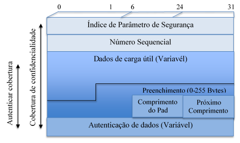
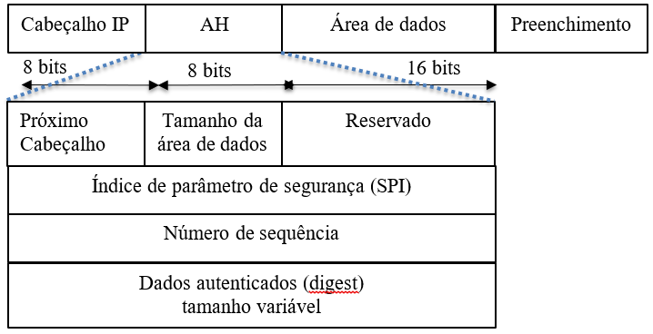

A Internet, na sua concepção originária, foi projetada de forma a ser a mais simples e genérica
possível, possibilitando assim a sua rápida expansão e crescimento.Toda essa simplicidade é, de fato,
percebida na facilidade de desenvolvimento e integração entre diversas redes. Contudo, grandes
modificações no kernel da Internet não são possíveis de serem feitas. Dessa forma, projetos atuais
que levam em consideração requisitos que não foram inicialmente pensados na concepção da Internet,
como por exemplo Segurança da Informação e Mobilidade de Hosts, possuem passos adicionais para serem
implementados de forma satisfatória, como a utilização de outros protocolos.
Com o avanço da Globalização, grandes volumes de dados sensíveis trafegam diariamente por todo o
planeta através da Internet, como transações financeiras, dados bancários, informações governamentais
secretas, controle remoto de armas militares, etc. Começou-se a pensar, então, em métodos e protocolos
para evitar que tais informações fossem capturadas indevidamente.
O protocolo de Internet (IP) versão 6 (IPv6), quando em desenvolvimento, tinha como principais
objetivos a expansão do número possível de hosts e aumentar a segurança na camada de Rede. Percebeu-se
então, que estas técnicas de segurança também poderiam ser aplicadas ao IPv4, que é largamente difundido
e utilizado, além de que sua substituição pelo IPv6 está se dando a passos lentos.
O principal protocolo de segurança desenvolvido foi o IP Security Protocol (IPSec). Sua maior vantagem
é o fato de prover serviço seguros de forma transparente, tanto para as aplicações, quanto para os usuários.
Além disso, as aplicações que usam IPSec, não precisam ser modificadas de nenhuma forma. Isso é
particularmente importante, quando se trabalha na segurança de uma determinada aplicação, porém não se
possui o seu código fonte, fato bem comum atualmente. O IPsec integra sistemas de autenticação, gestão e
distribuição de chaves de forma a estabelecer conexões mais seguras, como veremos nos tópicos a seguir.
2. Conceitos Básicos
Como este texto refere-se a camada de rede, trabalha-se com apenas dois tipos de entidade: hospedeiro e
roteador. Portanto, a menos que seja explicitado, quando fala-se em entidade, subentende-se que
trata-se de qualquer uma das entidades da camada de rede.
Considerando que duas entidades queriam se comunicar de forma segura através de um meio público como a
Internet, algumas propriedade são desejáveis, conforme indicado em [KUROSE]:
Confidencialidade - apenas remetente e destinatário tem acesso a mensagem descodificada
Integridade da Mensagem - Confiança de que a mensagem não foi alterada durante a transmissão
Autenticação de Ponto Final - Remetente deve confirmar a identidade do destinatário e vice-versa
Segurança Operacional - O ambiente em que a mensagem é escrita deve estar bem protegido. Esta
característica não envolve o IPsec, e está além do escopo deste trabalho. Porém, é característica
fundamental de uma comunicação segura.
2.1. Criptografia
Uma mensagem sem codificação, tem seu conteúdo em texto plano (também conhecido como texto claro ou aberto).
Uma mensagem que passa por um algoritmo de criptografia passa a ter um conteúdo em texto cifrado, inteligível
para um interceptor na transmissão.
Técnicas e algoritmos de transmissão são publicados e padronizados na Internet (p.ex as RFCs 1321, 3447, 2420).
Independente da técnica usada, uma mensagem criptografada só pode ser descriptografada com uma chave de
segurança. Esta chave (que pode ser a mesma para ambos ou exclusiva de cada um) serve de parâmetro para que o
algoritmo de decriptação possa transformar a mensagem em texto cifrado em uma mensagem em texto plano. A figura
2.1.1 ilustra os componentes básicos de um sistema de criptografia.
Figura 2.1.1 - Esquema geral de uma comunicação criptografada que é interceptada por um invasor.
Adaptada de [KUROSE].
2.2. Funções de Hash criptográficas
Funções hash criptográficas são usadas para atender a propriedade de integridade da mensagem em uma
comunicação segura, pois garante-se que a mensagem não foi alterada no meio do caminho.
Se diferem das funções hash comuns por serem funções bijetoras, ou seja, sempre há um único hash para a
mensagem escrita. Em outras palavras um invasor não consegue reproduzir o mesmo hash desconhecendo a mensagem
em texto plano. Algoritmos de hash criptografados bem conhecidos são o MD5[RFC 1321] e o SHA-1[FIPS, 1995].
2.3. Código de Autenticação de Mensagem
Nos cenários descritos, ainda é possível q o invasor crie uma mensagem qualquer, gere um hash válido e envie
para um receptor, falsificando sua identidade como remetente.
Portanto, emissor e receptor compartilham um segredo chamado de chave de autenticação de mensagem. Essa chave
é uma sequência de bits que é concatenada à mensagem original para o cálculo da função hash criptográfica.
O receptor, que possui o código de autenticação, calcula o hash da mensagem recebida concatenada de seu código.
Se o valor do hash recebido for igual ao do hash calculado, a mensagem é autêntica. A figura 2 ilustra esse
processo.
Sistema de empregando o código de autenticação de mensagem para garantir
a integridade da mensagem (imagem adaptada de [KUROSE])
2.4. Assinatura Digital
Têm-se até aqui, garantias de confidencialidade e integridade. Resta identificar um usuário. Ou seja,
garantir que aquela mensagem válida foi enviada pelo usuário X e somente ele poderia ter enviado essa mensagem.
Neste caso, uma alternativa é usar um par de chaves (uma pública e uma privada). A chave pública conhecida por
todos, inclusive pelo destinatário. O remetente "assina" sua mensagem utilizando sua chave privada no hash citado
na seção 2.2. O destinatário utiliza a chave pública do remetente para chegar ao hash da mensagem e utiliza a
mensagem para chegar ao hash da mensagem (como explicado na seção 2.3). Caso o valor obtido nos dois processos
seja o mesmo, o remetente está identificado.
3. Arquitetura do IPsec
O Protocolo de Segurança da Internet (mais conhecido por sua sigla, IPsec) é um modelo de comunicação
segura de ponta a ponta através da Internet. Por ser implementado junto ao Protocolo da Internet (IP) na
camada de rede, é um sistema de segurança transparente às outras camadas da pilha de protocolos, ou seja,
o IPsec não prejudica o suporte já oferecido pelo IP aos diversos protocolos das camadas de transporte
e enlace. Inicialmente desenvolvido para IPv6 (a sexta versão do protocolo de internet), foi adaptado para
ser compatível com IPv4 devido ao lento crescimento do primeiro.
Foi desenvolvido pela Força-Tarefa de Engenharia da Internet (IETF), um grupo aberto e internacional
que desenvolve e promove padrões para a Internet. Todos os padrões e protocolos publicados encontram-se
organizados em documentos técnicos conhecidos como RFCs ("Pedidos de Comentários", em tradução livre).
A aplicação mais comum do IPsec é em Redes Privadas Virtuais (VPNs), um serviço de tunelamento que garante
integridade e sigilo de informações enviadas pela Internet. Existem diferentes tipos de VPNs, implementadas
com alternativas ao IPsec, como os protocolos SSL/TLS, PPTP e L2TP. PÔR NOTA DE "RODAPÉ?"
No exemplo da figura 3.1, retirado de [KUROSE], a sede de uma instituição qualquer se comunica com sua filial através
da Internet. Seu roteador com suporte a IPsec, criptografa a mensagem (carga útil) e adiciona um cabeçalho IPsec,
que será usado pelo Roteador da filial para descriptografar o datagrama. Um cliente remoto (hospedeiro) também
pode utilizar de uma VPN para se comunicar seguramente com a filial.
É interessante notar na figura como o IPsec é transparente tanto para a os roteadores da Internet, que enxegam
a mensagem como um datagram comum com um cabeçalho IP roteável, quanto para os dispositivos na redes locais,
que recebem e enviam pacotes descriptografados.
Figura 3.1: Rede Virtual Privada (VPN). Adaptado de [KUROSE].
O IPsec utiliza três protocolos para cumprir sua função:
Cabeçaçho de Autenticação (AH), que provê autenticação e integridade.
Encapsulamento de Dados de Segurança (ESP), que provê além de confidencialidade, além de
autenticação e integridade.
Troca de Chaves da Internet (IKE), que auxilia os protocolos acima estabelecendo um canal
seguro para a troca de chaves entre remetente e destinatário.
Vale citar os principais algoritmos de criptografia e autenticação AES128, MD5 e SHA1, todos usados e combinados
pelos protocolos de segurança listados acima.
A figura abaixo ilustra o sistema IPsec. A comunicação se inicia com uma conexão lógica, definida pelo protocolo
IKE e chamada de Associação de Segurança IKE ou simplesmente SA IKE (não confundir com a Associação de Segurança
do IPsec, que será explicada com detalhes mais a frente. Na RFC 7296, a SA do IPsec é definida como "Child SA").
Na SA IKE acontecem requisições e respostas. São trocadas informações de controle e chaves
Diffie-Hellman (ver 3.4) que servirão para estabelecer outra conexão lógica, a SA
do IPsec. Nesta SA, é negociada a criptografia da mensagem e outras políticas de segurança.
Em outras palavras, para que as parte de uma comunicação criptografada se entendam, é preciso uma troca de
informações prévia. Em outras palavras, antes de se ter uma conversa em código, é preciso combinar o código.
Todas as informações trocadas são guardadas em bancos de dados nomeados SPD (Banco de Dados de políticas
de segurança) e SPA (Banco de Dados de Associações de Segurança). Esses bancos são sempre consultados pela
entidade para que ela saiba como manipular um datagrama IPsec (ver 3.3). Com as regras
estabelecidas e banco de dados consultados ou atualizados, é usado um dos protocolos (AH ou ESP) ou ambos.
Uma vez que o ESP provê as mesmas funcionalidade do AH, o segundo tem caído em desuso.
Figura 3.2: Estrutura Geral do IPsec. Adaptado de [JAMHOUR].
3.1. Cabeçalho de Autenticação
O Cabeçalho de Autenticação (AH) é um protocolo que provê integridade e autenticidade de uma
mensagem. O datagram original é modificado, ganhando um cabeçalho de autenticação que possui os campos
vistos na figura 3.1.1.
As informações contidas em cada campo do cabeçalho de autenticação são listadas abaixo:
Próximo Cabeçalho: Campo de 8 bits que indica o tipo de pacote (carga útil) subsequente ao cabeçalho
de autenticação. Sendo o cabeçalho AH um cabeçalho da camada de rede, o cabeçalho subsequente pertence
a um protocolo da camada imediatamente superior, o que no modelo TCP/IP é a camada de transporte. Neste caso
o próximo cabeçalho poderia ser TCP ou UDP (cada cabeçalho possui um digito correspondente, que o representa
neste campo. O protocolo TCP por exemplo, é representado pelo dígito 8).
Tamanho do Cabeçalho: Campo de 8 bits que especifica o tamanho do cabeçalho AH
Reservado: Campo de 16 bits reservados para atualizações futuras. Atualmente é preenchido com zeros.
SPI: O Índice de Parâmetros de Segurança é um campo de 32 bits usado pelo receptor para identificar
a SA do datagrama recebido.
Número de Sequência: Campo de 32 bits usado para identificar o datagrama e proteger o receptor de
ataques de repetição.
Valor de Checagem de Integridade: É utilizado para verificar a integridade e autenticidade do datagrama.
Como é gerado a partir da encriptação da carga útil, tem tamanho variável e, portanto, possui um enchimento
para ser múltiplo de 32 bits.
Figura 3.1.1: Campos do Cabeçalho de Autenticação. Adaptado de [FRIEDL].
O AH não oferece confidencialidade. O algoritmo de
hashing é responsável por criar o ICV. Ao realizar um hash das partes do cabeçalho de IP e das partes dos dados
do pacote, somente os dados do cabeçalho serão utilizados, por serem incorporados somente no cabeçalho e não
serem identificados até que sejam calculados.
O destinatário autentica o emissor através de uma assinatura digital, conforme discutido na seção
2.4.
3.2. Encapsulamento de Dados de Segurança
O cabeçalho de Encapsulamento de Dados de Segurança (ESP) é responsável pela criptografia dos dados que são
inseridos entre o cabeçalho IP e o restante do datagrama. Os campos de dados são alterados após serem
criptografados simultaneamente com o ESP, e seguido com o SPI para informar ao recipiente do pacote como proceder
para abertura apropriada do conteúdo do mesmo. Um contador no ESP informa quantas vezes o SPI foi utilizado para
o mesmo endereço IP de destino. Esse mecanismo previne um tipo de ataque no qual os pacotes são copiados e
enviados fora de ordem, confundindo assim os nós de comunicação. Não é suficiente garantir apenas a integridade
da informação, as confidencialidades dos dados precisam ser garantidas. Ou seja, garantir que a informação será́
lida somente pela pessoa correta. Assim, o IPsec utiliza o ESP todo o pacote, com exceção a parte de autenticação
é criptografado antes de ser transmitido. O somatório de verificação (checksum) é computado sobre todo o ESP, com
exceção do campo de autenticação, e o seu comprimento varia de acordo com o algoritmo utilizado. Os algoritmos de
criptografia utilizados são o DES (Data Encryption Standard) e o 3 DES (Triple Data Encryption Standard). A
autenticação do ESP é diferente da realizada pelo AH, pois não realiza a proteção do cabeçalho IP que precede
o ESP, apesar de proteger um cabeçalho IP encapsulado no Modo Túnel. O AH, por sua vez, protege este cabeçalho
externo, juntamente com todo o conteúdo do pacote ESP. Sendo assim, as duas autenticações não são utilizadas
ao mesmo tempo por questão de economia de processamento.
Com o ESP, o pacote é criptografado utilizando as tecnologias de criptografia. Se o pacote for interceptado,
o invasor irá precisar de uma chave de criptografia, e somente o computador de destino possui, sendo assim,
apenas o destino será́ capaz de interpretar ou modificar os dados após a descriptografia. Para criptografia,
utiliza-se DES-CBC, DES de 40 bits e DES tripla.
Os campos do cabeçalho do ESP incluem:
Security Parameters Index – SPI – Identifica a associação de segurança.
Sequence Number - É um número de sequência empregado para identificar o recebimento dos pacotes.
Payload Data – Dependendo do modo ocorrerá variação. Em modo transporte, os pacotes possuem o cabeçalho
TCP ou UDP e dados. No modo túnel engloba cabeçalho de IP original.
O AH protege os dados contra modificações, porém continua a vulnerabilidade dos dados em relação a
confidencialidade, ou seja, os dados não estão criptografados, continuam a trafegar em modo plain text na rede.
O ESP fornece então, os serviços de confidencialidade e, opcionalmente, autenticação e anti-replay para as
camadas superiores ao IP. Seu numero de protocolo no TCP/IP é o 50.
O uso do ESP previne ataques do tipo:
Replay, através da utilização do campo Sequence Number, de maneira análoga ao AH;
Particionamento de pacotes cifrados”, é o que acontece quando o atacante obtém partes de pacotes cifrados
e consegue montar um pacote que poder ser aceito por um dos membros da conexão. O uso de autenticação previne
este tipo de ataque;
Sniffer, quando o atacante obtém os pacotes que trafegam na rede. A utilização da criptografia previne
este tipo de ataque.

Figura 3.4: Campos do cabeçalho ESP. Adaptado de [CISCO]
3.3. Associações de Segurança
Antes que seja possível o envio de datagramas, remetente e destinatário estabelecem uma conexão lógica na
camada de rede, chamada associação de segurança(SA). Esta conexão é unidirecional, ou seja, caso duas
entidades necessitem trocar datagramas IPsec, duas SAs serão necessárias (uma para cada direção). É importante
notar neste ponto que uma mesma entidade pode ter várias SAs, uma vez que pode se comunicar com várias outras
entidades. Uma SA contém informações sobre origem e destino de um datagrama, o tipo de criptografia a ser usada
a chave de criptografia, o tipo de verificação de integridade (seção 2), a chave de autenticação e um indice que
identifica a SA (Índice de Parâmetros de Segurança - SPI). A figura 3.3.1 ilustra um SA e dois bancos de dados
fundamentais, mantidos por cada entidade que suporta IPsec, o banco de políticas de segurança (SPD) e o banco de
SAs (SAD).
Figura 3.3.1: Componentes de um SA
O SAD é consultado pelo remetente quando este precisa enviar um datagrama de acordo com o estabelecido
previamente com o emissor. O SAD provê o SPI, as chaves e os algoritmos que citamos anteriormente. O SAD
diz ao emissor como construir o datagrama IPsec que esperado pelo receptor.
O SPD funciona como uma espécie de firewall. Ele identifica os datagramas pelo remetente, destinatário e
tipo de protocolo de transporte (UDP, TCP, ICMP, etc) e especifica se devem ser convertidos em datagramas IPsec,
ou não. Caso o sejam, consultam o SAD. Também especifica quais datagramas devem ser descartados, quais devem ser
encaminhados ou aceitos mesmo sem proteção IPsec.
"De certa forma, as informações em um SPD indicam 'o que' fazer com um datagrama que está chegando; as
informações no SAD indicam 'como' fazer isso"[KUROSE]
3.4. Internet Key Exchange
A Internet Key Exchange (IKE) protocolo de gestão de chaves que usa a porta 500 UDP, cria, elimina e altera
as chaves para autenticação e validação de informações, o IKE caracteriza como regras de gestão do protocolo
hibrido, constituído pelo ISAKMP e pelo Oakley, sendo denominado IKE. Cria-se uma SA no IPsec para negociar
politicas de segurança e organizar as trocas das chaves de sessão.
O IKE (Internet Key Exchange) supre o gerenciamento da segurança para o Security Association. Na conexão do
IPsec o IKE autentica cada ponto do host, gateway e servidores, negociando politicas de segurança e manipulando
as trocas das chaves de sessão. Além disso, usa-se certificados X509v3 para a autenticação dos equipamentos
envolvidos durante a negociação do IKE. Permissão para comunicação com uma Autoridade Certificadora (CA –
Certificate Authority), gerencia os certificados incluindo o uso do SCEP (Simple Certificate Enrollment Protocol).
O certificado suporta uma estrutura hierárquica para o uso em uma infraestrutura de chaves públicas (PKI –
Public Key Infrastructure).
Os componentes incluídos são os protocolos de chaves públicas Diffie-Hellman estabelecendo uma chave de sessão
mesmo estando em um meio inseguro, que é a Internet.
IKE mune quatro funcionalidades:
Negocia quais protocolos, algoritmos e chaves serão usadas.
Garantir a identidade das partes, o cliente, quanto do servidor.
Gerencia as chaves após elas estarem em uso.
Garante que as trocas de mensagens que contém chaves sejam feitas por meios seguros.
A configuração de uma SA pode ser feita manualmente em cada gateway por um administrador de segurança,
sendo alterada também pelo protocolo IKE dinamicamente, sendo assim, garantindo uma segurança ainda maior.
A gerencia de chaves é especificada pelo IPsec sendo implementada de modo manual ou automática. E o protocolo
IKE é responsável por implementar a gerência automática de chaves. O ISAKMP é o executor do estabelecimento,
negociação, modificação e exclusão das AS’s. Definindo o formato dos pacotes e os procedimentos. O OAKLEY
fornece o mecanismo de troca de chaves utilizado pelo ISAKMP. Sendo uma variação mais segura do algoritmo
Diffie-Hellman.
Para estabelecer uma associação segura IKE, a negociação deve ser feita pelo o modo propondo os seguintes itens:
O algoritmo de criptografia para proteger os dados;
Um algoritmo de hash para assinatura digital;
Um método de autenticação para assinar o hash;
Informação sobre qual grupo a troca Diffie-Hellman deve feita;
Especificação da função pseudorandômica para fazer o hash de certos.
O IKE procede em duas fases. Na primeira fase, dois pares estabelecem um canal seguro para efetuar as operações do
ISAKMP SA. Na segunda fase, os dois pares ajustam os SA de um plano geral.
3.5. Modos de Operação
O IPsec apresenta dois modos de funcionamentos: o Modo Transporte e o Modo Túnel, e dois tipos de protocolos:
o Authentication Header (AH) e Encapsulating Security Payload (ESP) para transferência segura de informação.
O terceiro protocolo é o Internet Key Exchange Protocol (IKE), sua função é realizar a autenticação das
entidades envolvidas e gerir automaticamente as ligações IPsec. O Transporte IPsec trabalha em dois modos, modo
de Transporte e modo Túnel. No modo de Transporte, apenas o segmento da camada de transporte é processado, ou
seja, autenticado e criptografado. Este modo é adequado para implementações em servidores e gateways, protegendo
camadas superiores de protocolos, além de cabeçalhos IP selecionados. O cabeçalho AH é implantado após o
cabeçalho IP e antes do protocolo de camada superior; TCP, UDP e ICMP, ou antes de outros cabeçalhos que o IPsec
tenha inserido. Na abertura para modificações os endereços de IP de origem e destinos caso os pacotes sejam
interceptados.
Assegurando a segurança apenas dos dados oriundos das camadas superiores está o modo transporte que é empregado
para comunicação fim-a-fim entre computadores. Para conceder a segurança para a camada IP o modo túnel é aplicado
para comunicação entre roteadores. Sendo assim, ambos os protocolos AH e ESP podem funcionar no modo transporte e
túnel.
Figura 3.3.1: Estrutura de um datagrama IPsec nos diferentes modos
3.5.1. Transporte
O Modo Transporte é utilizado para estabelecer ligações seguras entre hosts. Neste modo é mantido
o header original dos pacotes IP e apenas as informações das camadas superiores são protegidas. Os
hosts precisão aguentar a funcionalidade IPsec.
No Modo Transporte o protocolo AH efetiva o pacote dos dados do pacote IP original a sua autenticação
e integridade. Mantem-se o IP header original e insere o header do protocolo AH para a proteção.

Figura 3.3.1: Estrutura de um datagrama IPsec nos diferentes modos
3.5.1. Túnel
O Modo Túnel todo o pacote IP é autenticado ou criptografado, resultando apenas o cabeçalho IP externos
visíveis, transmitindo o destino do gateway (roteador, firewall, etc), permanecendo todo o conteúdo interno
criptografado.Este método pode-se usar para evitar a análise de tráfego. Devido ao fato de o cabeçalho IP
conter o endereço de destino e possivelmente as diretivas de roteamento e informação proveniente da opção
salto-por-salto, não é possível transmitir o pacote IP criptografado dispondo prefixo de cabeçalho ESP,
pois roteadores intermediários seriam incapazes de processar o pacote.
É necessário encapsular o bloco inteiro do cabeçalho ESP mais o pacote IP criptografado com um novo cabeçalho
IP que deverá conter informações suficientes para o roteamento, mas não para a análise de tráfego. “Enquanto o
modo de transporte é adequado para proteger conexões entre estações que suportam o modo ESP o modo túnel é útil
numa configuração que inclua um firewall ou outro tipo de gateway de segurança que protege uma rede confiável
das redes externas. No segundo caso, a criptografia acorre apenas entre uma estação externa e o gateway de
segurança, ou entre dois gateways de segurança”. Liberando as estações da rede interna do processamento de
criptografia e simplificando a tarefa de distribuição de chaves pela redução do número de chaves necessárias.
Inibindo a análise de tráfego baseada no destino final.
O protocolo AH realizada autenticação e integridade de todo o pacote IP original. Um novo IP header
e o header do protocolo é inserido no AH para a proteção. O IP header original contém os endereços IP de
origem e destino da mensagem, enquanto o novo IP header contem os endereços IP das gateways IPsec.
O protocolo ESP realiza autenticação, integridade e confidencialidade do pacote IP original. Um novo
IP header é inserido no ESP header e um ESP Tailer para a proteção. Os endereços IPs de origem e destino
da mensagem são inseridos o IP header original, enquanto o novo IP header contém os endereços IP das
gateways IPsec.
O Modo Túnel é o modo mais utilizado e serve para criar uma ligação segura VPN entre duas gateways ou
entre uma gateway e um host. No método utilizado os equipamentos internos não precisam de suportar o IPsec,
a encriptação e desencriptação ocorre nas IPsec Gateways. Um novo IP header é criado e o pacote IP original
é totalmente protegido.
4. Considerações Finais
5. Referências
[1] KUROSE, James F. Redes de Computadores e a Internet - Uma abordagem Top-Down, 6ª Edição. Pearson Education India, 2014.
[2] PERLMAN, Radia; KAUFMAN, Charlie; SPECINER, Mike. Network security: Private Communication in a Public World, 2ª Ediçãp. Pearson Education India, 2016.
[3] KENT, S.; SEO, K. RFC 4301 "Security architecture for the internet protocol". Disponível em https://tools.ietf.org/html/rfc4301, 2005.
[4] KENT, S. RFC 4302 “IP Authentication Header”. Diponível em http://tools.ietf.org/html/rfc4302, 2005.
[5] KENT, S. RFC 4303 "IP Encapsulating Security Payload (ESP)". Diponível em http://tools.ietf.org/html/rfc4303, 2005.
[6] FRANKEL, S.; KRISHNAN, S. RFC 6071 "IP Security (IPsec) and Internet Key Exchange (IKE) Document Roadmap". Disponível em https://tools.ietf.org/pdf/rfc6071, 2011.
[7] KIVINEN, T., HOFFMAN, P., KAUFMAN, C., NIR, Y., ERONEN, P. RFC 7296 "Internet Key Exchange Protocol Version 2 (IKEv2)". Disponível em https://tools.ietf.org/pdf/rfc7296, 2014.
[8] FRANKEL, S.; KENT, K.; LEWKOWSKI, R.; OREBAUGH, A. D.; RITCHEY, R. W.; SHARMA, S. R. Guide to IPSec VPNs. NIST Special Publication, v. 800, 2005.
[9] OPPLIGER, R. Security at the internet layer. Computer, v. 31, n. 9, p.43{47, 1998.
[10] CAMILO, B. D. C. V. Análise da sobrecarga do ipsec no mapeamento de redes virtuais. 2015. (Projeto Final de Graduação) - Universidade Federal do Rio de Janeiro, 2015.
[11] ALSHAMRANI, H. Internet Protocol Security (IPsec) Mechanisms. International Journal of Scientific & Engineering Research, v. 5, n. 5, p.85{87, 2014.
[12] RICCI, B. Rede Segura: VPN Linux, 1ª Edição. Ciência Moderna, Rio de Janeiro, 2007.
[13] FRIEDL, S. J. An Illustrated Guide to IPsec. Disponível em htp://www.unixwiz.net/techtips/iguide-
[14] BRAGNETTO, L. F. B., da SILVA, S. C., BARBOSA, L. A. M. IPsec - Segurança de Redes, 2003. Disponível em http://www.braghetto.eti.br/files/IPSec%20-%20Versao%20Final.pdf. Acessado em 18 de maio de 2018.